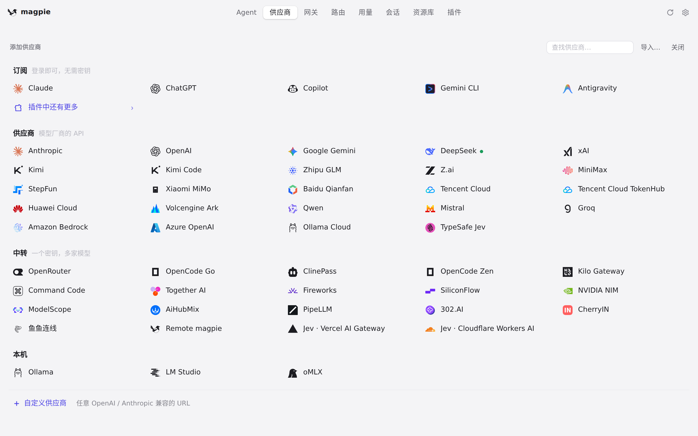
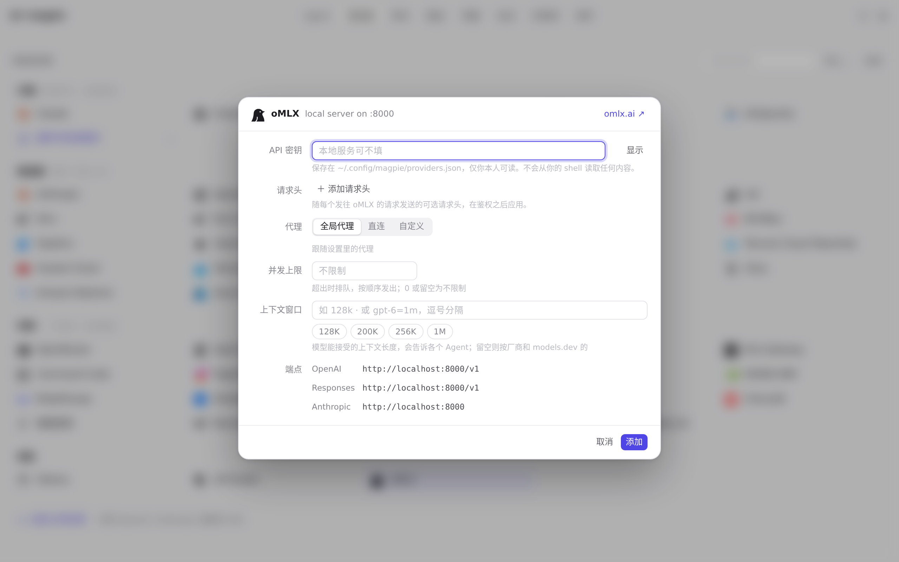

#635 界面预览
commit ecd9182 · 回到 PR · diff 在供应商预设里新增了一个内置本地预设 oMLX（http://localhost:8000，NoKey，Chat/Responses 走 /v1、Anthropic 走根路径），并新增了它的图标 assets/icons/omlx.svg。界面上就是「添加供应商」面板里多出一个带 oMLX 图标、无需密钥的本地预设，以及它对应的配置页。
红线是鼠标走过的轨迹，红色圆环是一次点击；底部文字是这一步在做什么。空格暂停，← → 逐段查看。

添加供应商面板里的 oMLX 预设 · 打开后的添加供应商面板
 添加供应商面板里的 oMLX 预设 · 向下滚动后的预设列表
添加供应商面板里的 oMLX 预设 · 向下滚动后的预设列表

添加供应商面板里的 oMLX 预设 · oMLX 预设的配置界面：地址与密钥状态